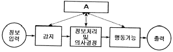

인간공학기사 (2011-03-20 기출문제)
1과목: 인간공학개론
1. 다음 중 신호검출이론에 대한 설명으로 옳은 것은?
- 잡음에 실린 신호의 분포는 잡음만의 분포와 구분되지 않아야 한다.
- 신호의 유무를 판정함에 있어 반응대안은 2가지뿐이다.
- 판정 기준은 β(신호/노이즈)이며, β＞1이며 보수적이고, β＜1이면 자유적이다
- 신호검출의 민감도에서 신호와 잡음간의 두 분포가 가까울수록 판정자는 신호와 잡음을 정확하게 판별하기 쉽다.
(정답률: 83%)

2. 다음 중 음 세기(Sound Intensity)에 관한 설명으로 옳은 것은?
- 음 세기의 단위는 Hz이다.
- 음 세기는 소리의 고저와 관련이 있다.
- 음 세기는 단위시간에 단위 면적을 통과하는 음의 에너지를 말한다.
- 음압수준(Sound Pressure Level) 측정시 주로 1000Hz 순음을 기준 음압으로 사용한다.
(정답률: 87%)
3. 다음 중 시(視)감각 체계에 관한 설명으로 틀린 것은?
- 안구의 수정체는 공막에 정확한 이미지를 맺히도록 형태를 스스로 조절하는 일을 담당한다.
- 망막의 표면에는 빛을 감지하는 광수용기인 원추체와 간상체가 분포되어 있다.
- 동공은 조도가 낮을 때는 많은 빛을 통과시키기 위해 확대된다.
- 1디옵터는 1미터 거리에 있는 물체를 보기 위해 요구되는 조절능(操切能)이다.
(정답률: 72%)
4. 다음 중 인체측정자료의 최대치를 기준으로 설계하는 것이 가장 적당한 경우는?
- 탈출구 및 통로
- 선반의 높이
- 조정 장치까지의 거리
- 자동차 운전자 좌석
(정답률: 94%)
5. 계기판에 등이 9개가 있고, 그 중 하나에만 불이 켜지는 경우에 정보량은 몇 bit인가?
- 2
- 3
- 4
- 8
(정답률: 67%)
6. 다음 중 정보이론에 관한 설명으로 틀린 것은?
- 인간에게 입력되는 것은 감각기관을 통해서 받은 정보이다.
- 간접적 원자극의 경우 암호화된 자극과 재생된 자극의 1가지 유형이 있다.
- 자극은 크게 원자극(distal stimuli)과 근자극(proximal stimuli)으로 나눌 수 있다.
- 암호화(coded)된 자극이란 현미경, 보청기 같은 것에 의하여 감지되는 자극을 말한다.
(정답률: 75%)
7. 다음 중 작업장에서 인간공학을 적용함으로써 얻게 되는 효과로 볼 수 없는 것은?
- 작업손실시간의 감소
- 회사의 생산성 증가
- 노ㆍ사간의 신뢰성 저하
- 건강하고 안전한 작업조건 마련
(정답률: 98%)
8. 새로운 광도 수준에 대한 눈의 적응을 무엇이라 하는가?
- 시력
- 순응
- 간상체
- 조도
(정답률: 83%)
9. 다음 중 Fitts의 법칙에 관한 설명으로 옳은 것은?
- 표적이 작을수록, 이동거리가 길수록 작업의 난이도와 소요 이동시간이 증가한다.
- 표적이 클수록, 이동거리가 길수록 작업의 난이도와 소요 이동시간이 증가한다.
- 표적과 이동거리는 작업의 난이도와 소요 이동시간과 무관하다.
- 표적이 작을수록, 이동거리가 짧을수록 작업의 난이도와 소요 이동시간이 증가한다.
(정답률: 89%)
10. 다음 중 인간의 후각 특성에 대한 설명으로 틀린 것은?
- 후각은 특정 물질이나 개인에 따라 민감도의 차이가 있다.
- 특정한 냄새에 대한 절대적 식별 능력은 떨어진다.
- 훈련을 통하면 식별 능력을 향상시킬 수 있다.
- 후각은 냄새 존재 여부보다는 특정 자극을 식별하는데 사용되는 것이 효과적이다.
(정답률: 87%)
11. 그림은 인간-기계 통합 체계의 인간 또는 기계에 의해서 수행되는 기본 기능의 유형이다. 다음 중 그림의 A부분에 해당하는 내용은?

- 정보보관
- 정보수용
- 신체제어
- 통신
(정답률: 78%)
12. 다음 중 인체측정에 관한 설명으로 옳은 것은?
- 인체 측정기는 별도로 지정된 사항이 없다.
- 제품설계에 필요한 측정 자료는 대부분 정규분포를 따른다.
- 특정된 고정 자세에서 측정하는 것을 기능적 인체치수라 한다.
- 특정 동작을 행하면서 측정하는 것을 구조적 인체치수라 한다.
(정답률: 81%)
13. 다음 중 인간의 작업 기억(working memory)에 관한 설명으로 틀린 것은?
- 정보를 감지하여 작업 기억으로 이전하기 위해서 주의(attention) 자원이 필요하다.
- 청각정보보다 시각정보를 작업 기억 내에 더 오래 기억할 수 있다.
- 작업 기억에 저장할 수 있는 정보량의 한계는 웨버의 법칙(Weber's law)에 따른다.
- 작업 기억 내에 정보의 의미 있는 단위(chunk)로 저장이 가능하다.
(정답률: 58%)
14. 다음 중 온도, 압력, 속도와 같이 연속적으로 변하는 변수의 대략적인 값이나 추세 등을 알고자 할 경우 가장 적절한 표시장치는?
- 묘사적 표시장치
- 추상적 표시장치
- 정량적 표시장치
- 정성적 표시장치
(정답률: 60%)
15. 다음 중 사용성에 관한 설명으로 틀린 것은?
- 편리하게 제품을 사용하도록 하는 원칙이다.
- 실험 평가로 사용성을 검증할 수 있다.
- 사용성은 반드시 전문가가 평가하여야 한다.
- 학습성, 에러방지, 효율성, 만족도 등의 원칙이 있다.
(정답률: 88%)
16. 다음 중 신호나 경보등의 검출성에 영향을 미치는 요인과 가장 거리가 먼 것은?
- 노출시간
- 점멸속도
- 배경광
- 반응시간
(정답률: 59%)
17. 인간이 기계를 조종하여 임무를 수행해야 하는 인간-기계체계가 있다. 인간의 신뢰도가 0.9, 기계의 신뢰도가 0.8이라면 이 인간-기계 통합 체계의 신뢰도는 얼마인가?
- 0.72
- 0.81
- 0.64
- 0.98
(정답률: 76%)
18. 2가지 이상의 신호가 인접하여 제시되었을 때 이를 구별하는 것은 인간의 청각 신호 수신기능 중에서 어느 것과 관련이 있는가?
- 위치 판별
- 절대 식별
- 상대 식별
- 청각 신호검출
(정답률: 67%)
19. 다음 중 부품 배치의 원칙이 아닌 것은?
- 크기별 배치의 원칙
- 중요성의 원칙
- 기능별 배치의 원칙
- 사용 빈도의 원칙
(정답률: 88%)
20. 막식 스위치(Membrane Switch)의 키 누름 과업에 있어 피드백 기법으로 볼 수 없는 것은?
- 키 이동 거리(distance)
- 엠보싱(Embossing)
- 스냅 돔(Snap Dome)
- 청각음(Auditory Tone)
(정답률: 50%)
2과목: 작업생리학
21. 다음 중 소음에 의한 청력손실이 가장 심하게 발생할 수 있는 주파수는?
- 500Hz
- 1000Hz
- 4000Hz
- 10000Hz
(정답률: 91%)
22. 다음 중 교대작업으로 적절하지 않은 것은?
- 12시간 교대제가 적정하다.
- 야간근무는 2~3일 이상 연속하지 않는다.
- 야간근무의 교대는 심야에 하지 않도록 한다.
- 야간근무 종료 후에는 48시간 이상의 휴식을 갖도록 한다.
(정답률: 90%)
23. 근력의 측정에 있어 동적근력 측정에 관한 설명으로 옳은 것은?
- 피검자가 고정물체에 대하여 최대 힘을 내도록 하여 평가한다.
- 근육의 피로를 피하기 위하여 지속시간은 10초 미만으로 한다.
- 4~6초 동안 힘을 발휘하게 하면서 순간 최대 힘과 3초 동안의 평균 힘을 기록한다.
- 가속도와 관절 각도의 변화가 힘의 발위와 측정에 영향을 미쳐서 측정이 어렵다.
(정답률: 43%)
24. 운동하는 물체에 힘이 가해지지 않으면 그 물체는 운동상태를 바꾸지 않고 등속 직선운동을 계속하려는 것을 나타내는 법칙은?
- 관성의 법칙
- 가속도의 법칙
- 작용-반작용의 법칙
- 오른손의 법칙
(정답률: 76%)
25. 1cd의 점광원으로부터 3m 거리에 떨어진 구면의 조도는 몇 럭(lux)가 되겠는가?
- 1/9
- 1/6
- 1/3
- 1/2
(정답률: 83%)
26. 다음 중 최대산소소비능력(MAP)에 관한 설명으로 틀린 것은?
- 산소섭취량이 일정하게 되는 수준을 말한다.
- 최대산소소비능력은 개인의 운동역량을 평가하는데 활용된다.
- MAP를 측정하기 위해서 주로 트레드밀(treadmill)이나 자전거 에르고미터(ergometer)를 활용한다.
- 젊은 여성의 평균 MAP는 젊은 남성의 평균 MAP에 비해 20~30% 정도이다.
(정답률: 72%)
27. 습구온도가 40℃, 건구온도가 30℃일 때 0xford 지수는 얼마인가?
- 37℃
- 37.5℃
- 38℃
- 38.5℃
(정답률: 69%)
28. 신체 부위의 동작 유형 중 관절에서의 각도가 감소하는 동작을 무엇이라고 하는가?
- 굴곡(flexion)
- 신전(extension)
- 내전(adduction)
- 외전(abduction)
(정답률: 80%)
29. 다음 중 인체의 구성과 기능을 수행하는 구조적, 기능적 기본단위는?
- 조직
- 세포
- 기관
- 계통
(정답률: 53%)
30. 국부적인 근육 활동의 전위차를 측정하여 작업의 신체부담 정도를 평가하는 방법은?
- 근전도
- 산소소비율
- 점멸융합수파수
- 심점도
(정답률: 93%)
31. 다음 중 정신적 작업부하에 관한 측정치가 아닌 것은?
- 부정맥지수
- 점멸융합수파수
- 뇌전도(EEG)
- 심전도(ECG)
(정답률: 63%)
32. 남성 작업자의 육체작업에 대한 에너지가를 평가한 결과 산소소모량이 2L/min이 나왔다. 작업자의 8시간에 대한 휴식시간은 약 몇 분 정도인가? (단, Murrell의 공식을 이용한다.)
- 282.4
- 82.4
- 142.1
- 41.2
(정답률: 49%)
33. 다음 중 에너지소비량에 영향을 미치는 인자와 가장 거리가 먼 것은?
- 작업 자세
- 작업 순서
- 작업 방법
- 작업 속도
(정답률: 70%)
34. 강도 높은 작읍을 일정 시간 동안 수행한 후 회복기에서 근육에 추가로 산소가 소비되는 것을 무엇이라 하는가?
- 산소결손
- 산소소비
- 산소부채
- 산소요구
(정답률: 91%)
35. 다음 중 신경계에 대한 설명으로 틀린 것은?
- 체신경계는 평활근, 심장근에 분포한다.
- 기능적으로는 체신경계오 자율신경계로 나눌 수 있다.
- 자율신경계는 교감신경계와 부교감신경계로 세분된다.
- 신경계는 구조적으로 중추신경계와 말초신경계로 나눌 수 있다.
(정답률: 70%)
36. 다음 중 육체적 작업에서 생기는 생리적 반응로 틀린 것은?
- 산소소비량이 증가한다.
- 수축기와 이완기 혈압이 같이 상승한다.
- 신체 전체에 흐르는 혈류량의 재분배가 이루어진다.
- 심장 박출량은 증가하지만, 심박수는 안정된다.
(정답률: 84%)
37. 다음 중 척추의 구조에 있어 요추는 몇 개로 이루어져 있는가?
- 2개
- 5개
- 7개
- 12개
(정답률: 92%)
38. 다음 중 소음에 의한 영향으로 틀린 것은?
- 맥박수가 증가한다.
- 12Hz에서는 발성에 영향을 준다.
- 1~3Hz에서 호흡이 힘들고 O2의 소비가 증가한다.
- 신체의 공진현상은 서 있을 때가 앉아 있을 때보다 심하게 나타난다.
(정답률: 40%)
39. “강렬한 소음작업”이라 함은 몇 데시벨 이상의 소음이 1일 8시간 이상 발생되는 작업을 말하는가?
- 85
- 90
- 95
- 100
(정답률: 78%)
40. 다음 중 실내의 면에서 추천반사율이 가장 높은 곳은?
- 바닥
- 천장
- 가구
- 벽
(정답률: 89%)
3과목: 산업심리학 및 관계법규
41. 다음 중 안전대책의 중심적인 내용이라 할 수 있는 3E에 포함되지 않는 것은?
- Engineering
- Economy
- Education
- Enforcement
(정답률: 90%)
42. 컨베이어 벨트에 앉아 있는 기계 작업자가 동료작업자에게 시동 버튼을 살짝 눌러서 벨트가 조금만 움직이다가 멈추게 하라고 일렀는데 이 동료작업자가 일시적으로 균형을 잃고 버튼을 완전히 눌러서 벨트가 전속력으로 움직여서 기계작업자가 강철 사이로 끌려 들어가는 사고를 당했다. 동료작업자가 일으킨 휴먼에러는 스웨인(Swain)의 휴먼에러 분류 중 어떠한 에러에 해당하는가?
- extraneous error
- omission error
- sequential error
- commission
(정답률: 69%)
43. Hick's Law에 따르면 인간의 반응시간은 정보량에 비례한다. 단순 반응에 소요되는 시간이 150ms이고, 단위 정보량당 증가되는 반응시간이 200ms이라고 한다면, 2bits의 정보량을 요구하는 작업에서의 예상 반응시간은 몇 mms인가?
- 400
- 500
- 550
- 700
(정답률: 68%)
44. 다음 중 피로의 생리학적(physiologcal) 측정방법과 거리가 먼 것은?
- 근전도 측정(EMG)
- 뇌파 측정(EEG)
- 심전도 측정(ECG)
- 변별역치 측정(촉각계)
(정답률: 75%)
45. 개인의 성격을 건강과 관련하여 연구하는 성격 유형 중 사람의 특성이 공격성, 지나친 경쟁, 시간에 대한 압박감, 쉽게 분출하는 적개심, 안절부절 못함 등의 성격을 가지는 행동 양식은?
- A형 행동양식
- B형 행동양식
- C형 행동양식
- D형 행동양식
(정답률: 91%)
46. 소비자의 생명이나 신체, 재산상의 피해를 끼치거나 끼칠 우려가 있는 제품에 대하여 제조 또는 유통시킨 업자가 자발적 또는 의무적으로 대상 제품의 위험성을 소비자에게 알리고 제품을 회수하여 수리, 교환, 환불 등의 적절한 시정조치를 해주는 제도는?
- 제조물책임(PL)법
- 리콜(recall)제도
- 애프터서비스제도
- 소비자보호법
(정답률: 81%)
47. 리더십은 교육 훈련에 의해서 향상되므로, 좋은 리더는 육성될 수 있다는 가정을 하는 리더십 이론은?
- 특성접근법
- 상황접근법
- 행동접근법
- 제한적 특질접근법
(정답률: 63%)
48. 다음 중 스트레스에 관한 설명으로 틀린 것은?
- 지나친 스트레스를 지속적으로 받으면 인체는 자기조절능력을 상실할 수 있다.
- 위협적인 환경특성에 대한 개인의 반응이라고 볼 수 있다.
- 스트레스 수준은 작업성과와 정비례의 관계에 있다.
- 적정수준의 스트레스는 작업성과에 긍정적으로 작용한다.
(정답률: 85%)
49. 주의의 특성 중 여러 종류의 자극을 지각할 때 소수의 특정한 것에 한하여 선택하는 기능을 무엇이라 하는가?
- 변동성
- 단속성
- 선택성
- 혼란성
(정답률: 87%)
50. 휴먼 에러의 예방대책 중 회전하는 모터의 덮개를 벗기면 모터가 정지하는 방식에 해당하는 것은?
- 정보의 피드백
- 경보시스템의 정비
- 대중의 선호도 활용
- 풀 푸르프(fool proof) 시스템 도입
(정답률: 92%)
51. 호손(Hawthorne)의 실험결과 작업자의 작업능률에 영향을 미치는 주요한 요인은?
- 작업조건
- 생산방식
- 인간관계
- 작업자 특성
(정답률: 91%)
52. 다음 중 모든 입력이 동시에 발생해야만 출력이 발생되는 논리조작을 나타내는 FT도의 논리기호 명칭은?
- 부정 게이트
- AND 게이트
- OR 게이트
- 기본사상
(정답률: 91%)
53. 다음 중 최고 상위에서부터 최하위의 단계에 이르는 모든 직위가 단일 명령권한의 라인으로 연결된 조직형태는?
- 직능식 조직
- 직계식 조직
- 직계ㆍ참모 조직
- 프로젝트 조직
(정답률: 75%)
54. 연간 1000명의 근로자가 근무하는 사업장에서 연간 24건의 재해가 발생하고, 의사진단에 의한 총휴업일수는 8760일 이었다. 이 사업장의 도수율과 강도율은 각각 얼마인가?
- 도수율:10, 강도율:6
- 도수율:15, 강도율:3
- 도수율:15, 강도율:6
- 도수율:10, 강도율:3
(정답률: 39%)
55. 다음 중 인간 신뢰도에 대한 설명으로 옳은 것은?
- 인간 신뢰도는 인간의 성능이 특정한 기간 동안 실수를 범하지 않은 확률로 정의된다.
- 반복되는 이산적 직무에서 인간실수확률은 단위시간당 실패수로 표현된다.
- THERP는 완전 독립에서 완전 정(政)종속까지의 비연속을 종속정도에 따라 3수준으로 분류하여 직무의 종속성을 고려한다.
- 연속적 직무에서 인간의 실수율이 불변(stationary)이고, 실수과정이 과거와 무관(independent)라다면 실수과정은 베르누이과정으로 묘사된다.
(정답률: 72%)
56. 인간의 본질에 대한 기본 가정을 부정적인 시각과 긍정적인 시각으로 구분하여 주장한 동기이론은?
- ERG이론
- 역할이론
- XY이론
- 기대이론
(정답률: 83%)
57. 다음 중 조직이 리더에게 부여하는 권한의 유형으로 볼 수 없는 것은?
- 보상적 권한
- 강압적 권한
- 작위적 권한
- 합법적 권한
(정답률: 72%)
58. 다음 중 하인리히(Heinrich)가 제시한 재해발생 과정의 도미노 이론 5단계에 해당하지 않는 것은?
- 사고
- 개인적 결함
- 기본원인
- 불안전한 행동 및 불안전한 상태
(정답률: 91%)
59. 다음 중 스트레스를 조직 수준에서 관리하는 방안으로 적절하지 않은 것은?
- 참여 관리
- 경력 개발
- 직무 재설계
- 도구적 지원
(정답률: 40%)
60. 다음 중 재해 발생 원인의 4M에 해당하지 않는 것은?
- Men
- Machine
- Movement
- Management
(정답률: 85%)
4과목: 근골격계질환 예방을 위한 작업관리
61. 다음 중 사람이 행하는 작업을 기본 동작으로 분류하고, 각 기본 동작들을 동작의 성질과 조건에 따라 이미 정해진 기준 시간을 적용하여 전체 작업의 정미시간을 구하는 방법은?
- PTS법
- Work Sampling법
- Therblog 분석
- Rating 법
(정답률: 74%)
62. 근골격계질환의 발생원인 중 직접적인 위험요인(ergonomic risk factors)이 아닌 것은?
- 작업강도
- 작업자세
- 작업만족도
- 작업의 반복도
(정답률: 94%)
63. 시간연구로부터 어느 작업의 평균작업시간이 2분, 정미시간이 2.5분임을 알았다면 기존속도와 비교할 때 작업자의 작업속도는 어떠한가?
- 빠르다.
- 느리다.
- 같다.
- 알 수 없다.
(정답률: 52%)
64. 워크샘플링 조사에서 초기 idle rate가 0.⑤라면, 99% 신뢰도를 위한 워크샘플링 회수는 약 몇 회인가? (단, Z0.0⑤는 2.58이다.)
- 1232
- 2557
- 3060
- 3162
(정답률: 30%)
65. 동작경제의 원칙 중 신체사용에 관한 내용으로 옳은 것은?
- 동작은 최대 차원의 신체부위로 한다.
- 가능한 한 직선적인 동작으로 한다.
- 양팔의 운동은 동일한 방향으로 움직이도록 한다.
- 휴식시간을 제외하고는 양손이 동시에 쉬지 않도록 한다.
(정답률: 89%)
66. 다음 중 근골격계질환 예방ㆍ관리프로그램 실행을 위한 보건관리자의 역할로 볼 수 없는 것은?
- 예방ㆍ관리프로그램을 지속적으로 관리ㆍ운영을 지원한다.
- 주기적으로 작업장을 순화하여 근골격계질환 유발 공정 및 작업유해요인을 파악한다.
- 주기적인 근로자 면담을 통하여 근골격계질환 증상 호소자를 조기에 발견할 수 있도록 노력한다.
- 근골격계질환 예방ㆍ관리 프로그램의 운영을 위한 정책 결정에 참여한다.
(정답률: 56%)
67. 다음 중 작업개선에 관한 설명으로 적절하지 않은 것은?
- 가능한 고정자세를 위하고 작업한다.
- 신체 부위의 압박을 피한다.
- 반복 동작을 줄이거나 제거한다.
- 표시장치와 조종장치를 사용자 중심으로 조정한다.
(정답률: 82%)
68. 다음 중 근골격계질환의 예방원리에 관한 설명으로 가장 적절한 것은?
- 공학적 개선을 통해 해결하기 어려운 경우에는 그 공정을 중단한다.
- 예방보다는 신속한 사후조치가 효과적이다.
- 사업장 근골격계 예방정책에 노사가 협의하면 작업자의 참여는 중요하지 않다.
- 작업자의 신체적 특징 등을 고려하여 작업장을 설계한다.
(정답률: 82%)
69. 다음 중 작업대 및 작업공간에 관한 설명으로 틀린 것은?
- 가능하면 작업자가 작업 중 자세를 필요에 따라 변경할 수 있도록 작업대와 의자 높이를 조절식을 사용한다.
- 가능한 한 낙하식 운반방법을 사용한다.
- 작업점의 높이는 팔꿈치 높이를 기준으로 설계한다.
- 정상 작업역이란 작업자가 윗팔과 아래팔을 곧게 펴서 파악할 수 있는 구역으로 조립작업에 적절한 영역이다.
(정답률: 58%)
70. 다음 중 PTS법과 관련이 가장 적은 것은?
- Methods-Time Measurement
- MODAPTS
- Work Factor
- Standard Time Study
(정답률: 49%)
71. 다음 중 위험작업의 관리적 개선에 속하지 않는 것은?
- 작업자의 신체에 맞는 작업장 개선
- 작업자의 교육 및 훈련
- 작업자의 작업속도 조절
- 적절한 작업자의 선발
(정답률: 52%)
72. 다음 중 근골격계부담작업의 유해요인조사 및 평가에 관한 설명으로 틀린 것은?
- 조사항목으로는 작업장의 상황, 작업조건 등이 있다.
- 정기 유해요인 조사는 수시유해요인 조사와는 별도로 2년마다 행한다.
- 신설되는 사업장의 경우에는 신설일로부터 1년 이내 최초의 유해요인조사를 실시하여야 한다.
- 사업주는 개선계획의 타당성을 검토하기 위하여 외부의 전문기관이나 전문가로부터 지도ㆍ조언을 들을 수 있다.
(정답률: 73%)
73. 다음 중 동작분석에 관한 설명으로 틀린 것은?
- 서블릭 분석, 필름/비디오 분석이 이에 해당된다.
- SIMO chart는 미세동작연구인 동시에 동작 사이클차트이다.
- 미세동작연구를 할 때에는 가능하면 작업방법이 서투른 초보자를 대상으로 한다.
- 미세동작연구실에서는 작업수행도가 월등히 뛰어난 작업사이클을 대상으로 한다.
(정답률: 71%)
74. 각 한 명의 작업자가 배치되어 있는 세 개의 라인으로 구성된 공정의 공정시간이 각각 3분, 5분, 4분일 때, 공정효율은 얼마인가?
- 60%
- 70%
- 80%
- 90%
(정답률: 53%)
75. 개정된 NIOSH의 들기 기준은 무엇을 기준으로 산정 되었는가?
- 40대 여성의 들기 능력의 50퍼센타일
- 20대 여성의 들기 능력의 5퍼센타일
- 40대 남성의 들기 능력의 50퍼센타일
- 20대 남성의 들기 능력의 5퍼센타일
(정답률: 49%)
76. 다음 중 직업성 근골격계 질환의 유형으로 분류되기 어려운 것은?
- 컴퓨터 작업자의 안구건조증
- 전자제조업 조립작업자의 건초염
- 물류창고 중량물 취급자의 활액낭염
- 육류가공업 작업자의 수근관증후군
(정답률: 80%)
77. 다음 중 서블릭(Therblig)에 관한 설명으로 옳은 것은?
- 작업측정을 통한 시간산출의 단위이다.
- 빈손이동(TE)은 비효율적 서블릭이다.
- 분석과정에서 시간은 스톱워치로 측정한다.
- 21가지의 기본동작을 분류하여 기호화한 것이다.
(정답률: 50%)
78. 다음 중 어깨, 팔목, 손목, 목 등 상지의 작업자세로 인한 작업 부하를 빠르고 상세하게 분석할 수 있는 근골격계질환의 위험평가기법으로 가장 적절한 것은?
- RULA
- OWAS
- NIOSH
- WAC
(정답률: 79%)
79. 작업관리의 문제해결 방법으로 전문가 집단의 의견과 판단을 추출하고 종합하여 집단적으로 판단하는 방법은?
- 브레인스토밍(Brainstorming)
- 마인드 맵핑(Mind Mapping)
- SEARCH의 원칙
- 델파이 기법(Delphi Technique)
(정답률: 69%)
80. 공정도에 표시되는 기호 중 우선개선대상이 되는 것은?
- ○
- □
- ⇨
- D
(정답률: 80%)